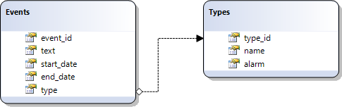

In this chapter you'll find basic information concerning static loading of data from:
In order to load data correctly your 'id' field in the database must be autoincrement.
APPLICABLE TO: Grid, TreeGrid, Tree, Combo, Scheduler, DataView, Chart, Form, DataStore components
Loading characteristics are defined at the stage of component configuration.
There are 3 ways of specifying the desired data:
When all the necessary data is placed in one database table, you should use the render_table() method:
$grid->render_table("grid50","item_id","item_nm,item_cd", "extra1, extra2");
Parameters:
If you want to render all fields from DB ( except for the key field ), you can use a simplified command:
$grid->render_table("grid50");
That's enough to make the connector implement the select, insert, update and delete operations.
If your SQL statement contains more than one table, the connector won't be able to generate the insert/update/delete operations correctly and you will need to make one from the following actions:
The 3rd approach is shown in the code snippet below:
if ($grid->is_select_mode())//code for loading data
$grid->render_sql("Select * from tableA, tableB where tableA.id=tableB.id",
"a.id","name,price,other");
else //code for other operations - i.e. update/insert/delete
$grid->render_table("tableA","id","name,price");
With such an init code a grid will be loaded with three columns of data from 2 tables, but during the saving only the data from the first table will be saved.
You are allowed to use any SQL statements to populate a dhtmlx component through dhtmlxConnector. For complex SQL queries we highly recommend you to use the render_complex_sql() method:
$grid->render_complex_sql("SELECT name from tableA WHERE dept =
(SELECT dept FROM tableB where name 'John')",
"contact_id","name,surname,age,address","extra1, extra2");
Parameters:
In case your SQL query was against a single table, it is quite probable that the insert/update/delete operations do not require any additional code. dhtmlxConnector will parse your SQL and generate the insert/update/delete statements based on the used table and fields' names.
Starting from version 2.0 dhtmlxConnector allows querying data from 2 tables, based on a relationship between specific columns in these tables.
Let's assume that we have 2 relational tables: events and types.

To join these tables, follow the next steps:
1) Create and configure a connector object for the child table:
$details = new JSONDataConnector($res);
$details->configure("types","type_id","name, alarm");
2) Create a connector object for the parent (primary) table and call the method mix() to set the relationship between the parent and child tables:
$events = new JSONSchedulerConnector($res);
$events->mix("types", $details, array(
"type_id" => "type"
));
3) Call the method render_table to retrieve the above configured data:
$events->render_table("events","event_id","text,start_date,end_date,type", "", "");
After completing these 3 steps, the server will return data as in:
{
data:[
{
id:"1",
text:"Energy and Environment Conference",
start_date:"2012-03-02 10:00:00",
end_date:"2012-03-04 18:00:00",
type:"2",
types:{
id:"2",
name:"appointment",
alarm:"0"
}
},
{
id:"2",
text:"Drinking beer with the guys",
start_date:"2012-03-05 20:00:00",
end_date:"2012-03-05 23:00:00",
type:"3",
types:{
id:"3",
name:"memo",
alarm:"1"
}
}
]
}
Starting from version 1.5, you can load data using stored procedures in SQL statements. The library provides a special method for this purpose - render_complex_sql.
$grid->render_complex_sql("exec usp_findusers 'John'","id","name,surname,age,
address,phone");
The last parameter of the render_array, render_sql, render_complex_sql, render_table methods allows you to define a list of fields which will be extracted from database table but won't be sent to the client side.
These fields can be used as attributes or flags, mapped to different properties of records ( userdata, row styles, images, etc. ).
$grid->render_table("tableA","id","name,price","extra1,extra2");
// or
$grid->render_sql("Select * from tableA, tableB where tableA.id=tableB.id",
"table_a_id","name,price,other","extra1,extra2");
The extra1 and extra2 fields will be available in all the server-side events but won't be sent to the client side, and won't be included into update/insert operations.
Starting from version 2.0 you can add a custom key:value pair(s) to all items of the dataset at once. The adding is realized with the help of the method mix().
For example, the following script
$conn = new JSONDataConnector($res);
$conn->mix("active", "yes");
$conn->render_table("tasks","id","name,start_date,end_date");
produces data as in:
[
{
id: "1",
name: "Project #599-57486AN",
start_date: "2012-05-12 10:00:00",
end_date: "2012-10-12 10:00:00",
active: "yes"
},
{
id: "2",
name: "Project #600-64739GH",
start_date: "2012-05-20 09:00:00",
end_date: "2013-05-12 10:00:00",
active: "yes"
}
]
In case of Tree and TreeGrid, the render_array, render_sql, render_complex_sql and render_table accept one more parameter - the relation ID. For the default TreeGrid hierarchy it's the name of the field which will be used to link the parent and child records.
$treeGrid->render_table("tableA","id","name,price","","parent_id");
// or
$treeGrid->render_sql("Select * from tableA, tableB where tableA.id=tableB.id",
"a.id","name,price,other","","parent_id");
To make the usage of extracted data handier you can use aliases for DB field names (makes sense only if you use the server-side events):
$grid->render_table("tableA","id","name,price(product_price)");
// or
$grid->render_sql("Select *,tableA.id as aid from tableA, tableB where
tableA.id=tableB.id", "tableA.id(aid)","name,price(product_price),other");
Starting from version 1.5, instead of database you can load data from a PHP array which can be filled by any kind of external logic.
To load data from a PHP array, use the method render_array. Be careful, the method can't be used for storing data, but you still can use event handlers, or a custom model to intercept data saving commands and process them in some custom way.
Parameters:
$data = array(
array("id"=> "1", "product" =>"Phone AB12", price:"460"),
array("id"=> "2", "product"=>"Tablet device", price:"830")
);
$conn->render_array($data, "id", "product,price");
Starting from version 2.0, dhtmlxConnector allows getting data as a string instead of loading it directly into the client.
To get data generated by dhtmlxConnector on the server side, call the asString command with the true parameter:
$conn->asString(true);
Once you've done it, the render-related methods stop to retrieve data on the client and start to give it up as a return value.
$res= new PDO("mysql:dbname=$mysql_db;host=$mysql_server",$mysql_user,$mysql_pass);
$conn = new GridConnector($res,"MySQL");
$conn->asString(true);
$result = $conn->render_table("tevents","event_id","text,start_date,end_date");
Starting from version 2.0 there is a possibility to combine data configured by several connectors in one dataset and load it in one request. The feature is provided by the MixedConnector. Read the MixedConnector article to learn the details.
APPLICABLE TO: Grid, TreeGrid, Tree, Combo, Scheduler, DataView, Chart, Form
Starting from version 1.0, dhtmlxConnector allows using FileSystem as datasource (please note, to start using this functionality you should include the db_filesystem.php file located in the connector's package).
require("./codebase/connector/db_filesystem.php");
require("./codebase/connector/grid_connector.php");
$grid = new GridConnector("", "FileSystem");
$grid->render_table("../","safe_name","filename,full_filename,
size,name,extention,date,is_folder");
In the code snippet above, grid is filled with info about files located in the 'd:/www' folder.
Parameters of the 'render-table' method:
There are 3 ways to limit files in output:
by extension type:
$fileTypes = FileSystemTypes::getInstance();
$fileTypes->addExtention('png');
by regexp pattern:
$fileTypes = FileSystemTypes::getInstance();
$fileTypes->addPattern('/^.+ ..*$/');
by meta-type:
The following meta-types can be used:
$fileTypes = FileSystemTypes::getInstance();
$fileTypes->setType('web');
APPLICABLE TO: Grid, TreeGrid, Tree, Combo, Scheduler, DataView, Chart, Form
Starting from version 1.0, dhtmlxConnector allows using an Excel file as datasource.
To start using this functionlity you should:
1) Download phpExcel.
It isn't included in the connector's package. You can grab it from 2 sources:
2) Unzip library to the connector's folder.
3) Include related files:
//files from libExcel package
require_once('lib/PHPExcel.php');
require_once('lib/PHPExcel/IOFactory.php');
//connectors
require("../../codebase/db_excel.php");
require("../../codebase/grid_connector.php");
$grid = new GridConnector("../some.xls", "ExcelDBDataWrapper");
$grid->render_table("A18:F83", "id", "A,B,C,D,E,F");
Parameters:
1) constructor GridConnector()
2) render_table() method
a) a range of cells in the spreadsheet, for example A18:F83
$grid->render_table("A18:F83", "id", "A,B,C,D,E,F");
b) the number of the top row, from which output should be started, for example A4
$grid->render_table("A1", "id", "A,B,C,D,E,F");
c) '*', which means including all not empty rows
$grid->render_table("*", "id", "A,B,C,D,E,F");
Applicable to: Grid
When you need to load both data and header from an excel file, you can make it through GridConfiguration:
$grid = new GridConnector($excel_file, "Excel");
$config=new GridConfiguration();
//array of cells, with labels for grid's header
$config->setHeader($grid->sql->excel_data(array("A3","B3","F13")));
$grid->set_config($config);
$grid->render_table("A18", "id", "A,B,F");